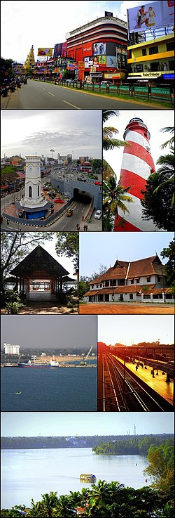
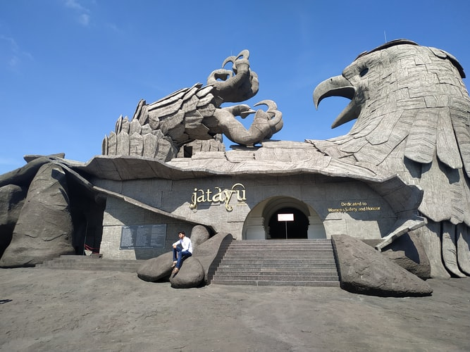
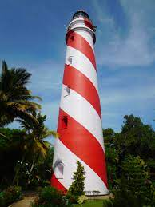
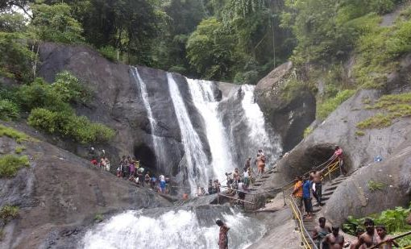

Kollam is a city in the state of Kerala, on India's Malabar Coast. It’s known as a trade hub and for its beaches, like lively Kollam and secluded Thirumullavaram. Sardar Vallabhbhai Patel Police Museum has artifacts tracing the history of the police force. Nearby, Ashtamudi Lake is a gateway to the Kerala backwaters, a network of waterways rich with vegetation. The striped 1902 Tangasseri Lighthouse has ocean views.
Jatayu Earth Center, also known as Jatayu Nature Park or Jatayu Rock, is a park and tourism centre at Chadayamangalam in Kollam district of Kerala. It stands at an altitude of 350m above the mean sea level. Jatayu Nature Park holds the distinction of having the world’s largest bird sculpture, which is of Jatayu.
Tangasseri Lighthouse is situated at Tangasseri in Kollam city of the Indian state of Kerala. It is one of the two lighthouses in the Kollam Metropolitan Area and is maintained by the Cochin Directorate General of Lighthouses and Lightships.
Palaruvi Falls is a waterfall located in Kollam district in the Indian state of Kerala. It is the 32nd highest waterfall in India. Palaruvi falls from a height of 300 feet and is situated at Aryankavu in the Kollam district of the south Indian state of Kerala.
